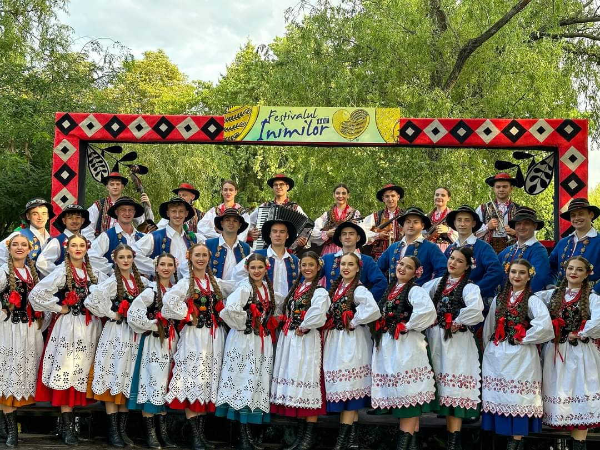
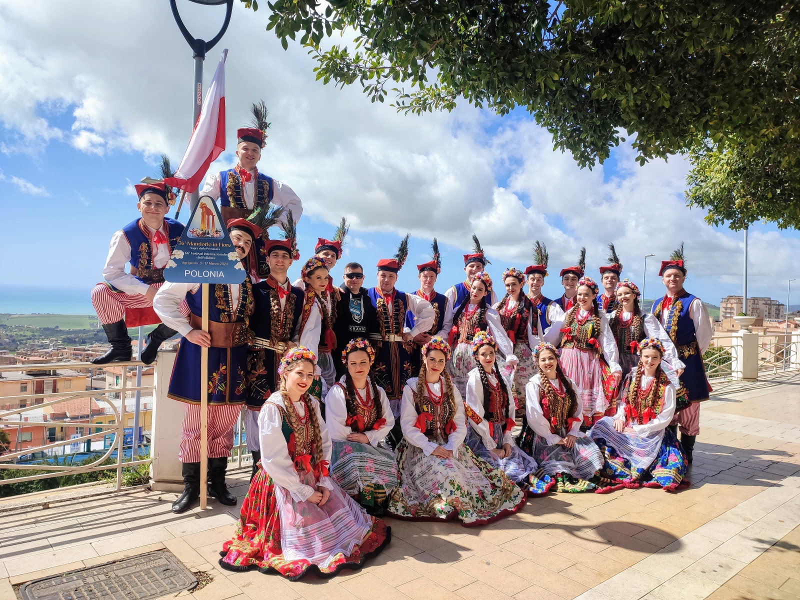
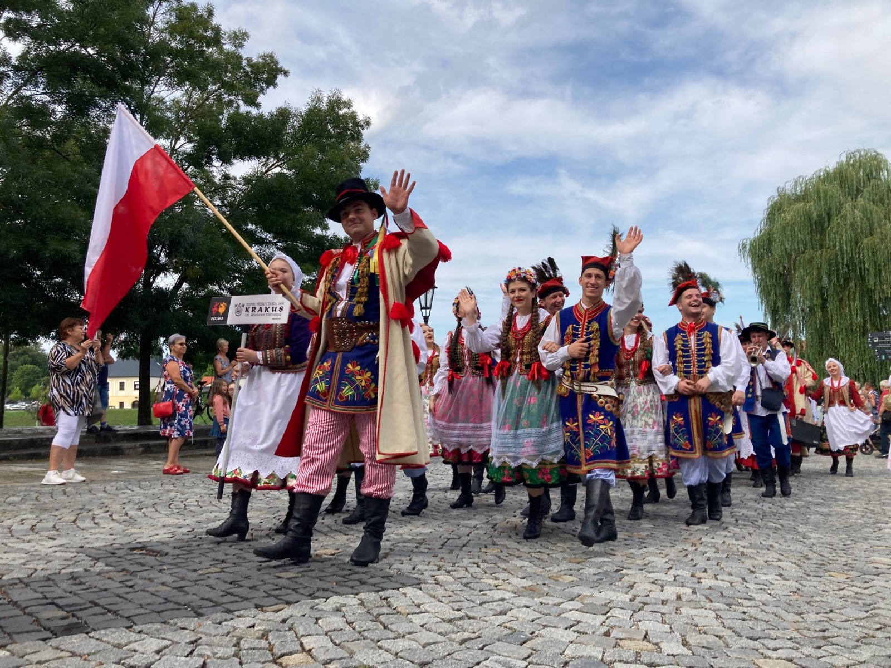

Wyjazdy Zagraniczne
Zespół w ciągu 74 lat działalności koncertował w kraju i za granicą ponad 4700 razy. Jego występy gorąco oklaskiwano prawie we wszystkich krajach Europy oraz w Azji, Afryce, Ameryce Północnej i Południowej. Odbył w tym czasie ponad 190 zagranicznych wojaży artystycznych. Zdobył wiele nagród i wyróżnień na krajowych i międzynarodowych festiwalach.
| Lokalizacja | Data | Opis | Zdjęcie |
|---|---|---|---|
| 2024 | |||
| Timisoara, Rumunia | Lipiec 2024 | W lipcu Zespół Pieśni i Tańca Krakus odwiedził Timisoarę w Rumunii, biorąc udział w renomowanym Festiwalu Inimilor. Podczas występów zaprezentowali niezwykle energetyczną suitę rzeszowską oraz pełną wdzięku suitę krakowską, zachwycając publiczność różnorodnością polskich tradycji. Wyjazd był wyjątkową okazją do promocji polskiego folkloru na międzynarodowej scenie. |  |
| Agrigento, Włochy | Marzec 2024 | Wyjazd „Krakusa” na festiwal Mandorlo in Fiore był niezapomnianym doświadczeniem pełnym wrażeń kulturalnych. Podczas festiwalu uczestnicy mieli okazję wziąć udział w koncertach i szerzyć polskie tradycje, sztukę i folklor, a także poznawać bogactwo tej malowniczej włoskiej wyspy – historyczne, kulturowe, kulinarne. Mimo tego, że festiwalowy czas był bardzo intensywny i niesamowicie męczący, atmosfera panująca podczas jego trwania była bardzo energetyczna i inspirująca, pozostawiając w sercach jego uczestników, niezatarte wspomnienia, do których wracają do dziś. |  |
| 2023 | |||
| Pisek, Czechy | Sierpień 2023 | Pod koniec sierpnia 2023 Zespół Pieśni i Tańca AGH „Krakus” odwiedził czeskie miasto Pisek, uczestnicząc w XXVIII International Folklore Festival. Podczas występów zaprezentował m.in. suitę sądecką i krakowską, zdobywając uznanie publiczności. Poza koncertami zespół zwiedzał zabytki miasta, uczestniczył w paradzie i gościł na zamku w Orliku, gdzie występ oglądała książęca para Schwarzenbergów. |  |
| Meksyk | Lipiec/Sierpień 2023 | W lipcu i sierpniu 2023 Zespół Pieśni i Tańca AGH „Krakus” odbył wyjątkową podróż do Meksyku, występując na dwóch festiwalach folklorystycznych w stanach Zacatecas i Guanajuato. Zespół zaprezentował piękno polskiego folkloru, wykonując m.in. suity krakowską i śląską, a także śpiewając „Cielito Lindo” wspólnie z publicznością. Oprócz koncertów artyści zwiedzali historyczne miasta, poznawali lokalne tradycje i smakowali kuchnię meksykańską, zapisując tę przygodę na długo w pamięci. | |
| Chorwacja, Serbia | Lipiec 2023 | Dwutygodniowa bałkańska przygoda z festiwalami folklorystycznymi w Chorwacji i Serbii, zwiedzaniem trzech europejskich stolic oraz licznymi integracjami, koncertami i eksploracjami lokalnych tradycji była niezapomnianym doświadczeniem. Bogactwo wspomnień, miejsc, smaków i wspólnego śpiewu na długo pozostanie w naszych sercach, podkreślając wyjątkowość ludzi, którzy stworzyli tę pełną barw mozaikę wspólnych przeżyć. | |
| 2021 | |||
| Tbilisi, Gruzja | Lipiec 2021 | Podczas podróży do Gruzji w ramach festiwalu „The Country of Legends” mieliśmy okazję odkrywać gościnność mieszkańców, którzy częstowali nas winem i opowieściami, a także prezentować polski folklor w towarzystwie zespołów z Ukrainy i Turcji. Zwiedziliśmy m.in. Kutaisi, Martvili i Tbilisi, podziwiając lokalne zabytki i krajobrazy, a wieczorami integrowaliśmy się podczas międzynarodowych biesiad. Wyjazd pełen piękna, tradycji i niezapomnianych spotkań utwierdził nas w przekonaniu, że Gruzini są mistrzami gościnności. | |
| 2019 | |||
| Manila, Filipiny | Grudzień 2019 | W 2019 roku zespół Krakus wziął udział w 16. Fiesta Folkloriada na Filipinach, po intensywnych przygotowaniach do 70-lecia zespołu i wcześniejszych podróżach na Ukrainę i Łotwę. Po ekscytującym locie przez Dubaj, gdzie przeżyli przygodę z zagubionym paszportem, dotarli na Cebu, gdzie spędzili czas na nurkowaniu z rekinami wielorybimi i zwiedzaniu rajskich wysp. Kolejnym etapem była Manila, gdzie zespół wystąpił na festiwalu, ciesząc się nie tylko występami, ale również luksusowymi warunkami pobytu w centrum miasta. | |